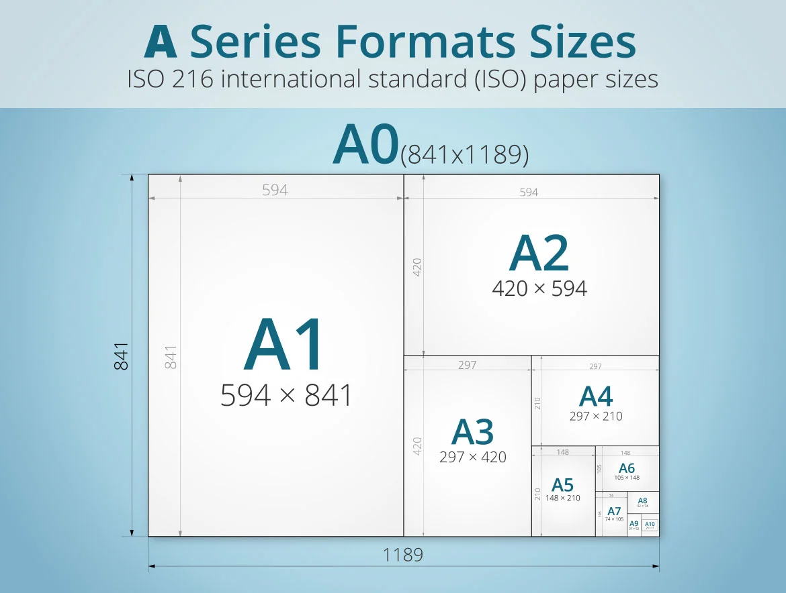
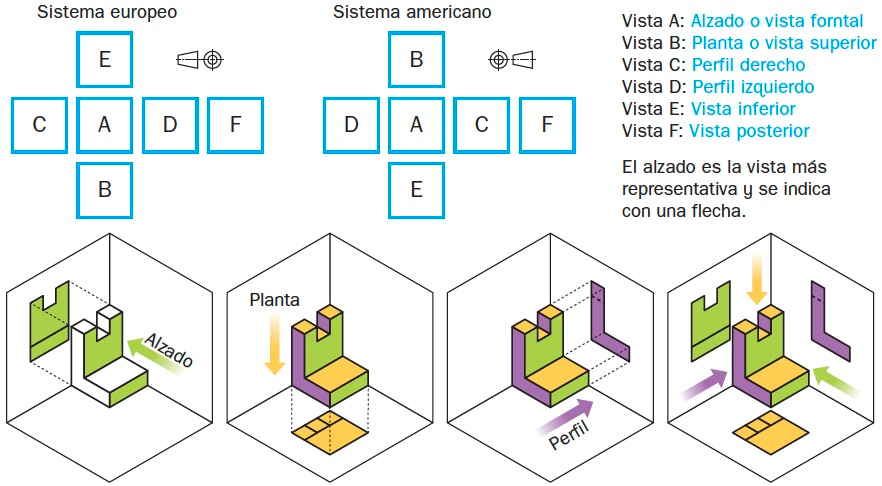
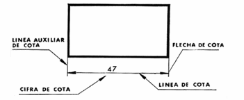
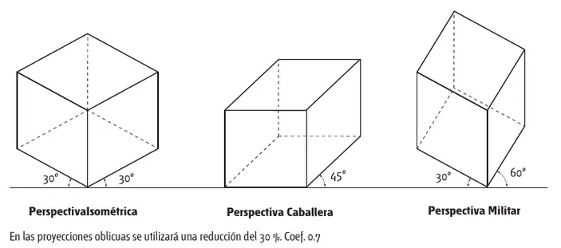

LOS ÚTILES DE DIBUJO Y LA ESCALA BÁSICA
Para expresarnos gráficamente en Tecnología necesitamos precisión y limpieza. El uso correcto de las herramientas marca la diferencia entre un garabato y un plano técnico.
1.1. Materiales de dibujo
La mina está hecha de una mezcla de grafito (la mina negra) y arcilla. Según su dureza, los lápices se dividen en tres clases:
- H (Hard / Duros): Dejan un trazo muy fino y claro. Los usamos para líneas auxiliares, bocetos iniciales y líneas que luego borraremos.
- HB (Medium / Medio): Es el lápiz común para escribir y hacer los primeros trazos de un dibujo.
- B (Soft / Blandos): Dejan un trazo muy oscuro y grueso. Se usan solo al final para repasar y remarcar el dibujo definitivo.
Sirve para eliminar trazos no deseados. Debe estar siempre limpia para no emborronar la lámina.
El tamaño estándar básico es el A0 (que mide 1 m2).
Si doblamos un A0 por la mitad, obtenemos un A1; si doblamos un A1, un A2; si doblamos este, un A3, y si doblamos el A3 por la mitad obtenemos la hoja estándar que usamos en clase: el A4 (210 * 297 mm).

Formatos y tamaños de papel según la norma ISO 216 (Serie A)1.2. Herramientas de trazado y medida
- Regla graduada: Mide en centímetros y milímetros. Sirve para medir distancias, no para trazar líneas largas (para eso se usan la escuadra y el cartabón).
- Transportador de ángulos: Es un semicírculo con grados (0º a 180º) que sirve para medir o construir ángulos.
-
Juego de escuadra y cartabón:
- Escuadra: Tiene forma de triángulo rectángulo isósceles (90º, 45º, 45º). Tiene dos lados iguales.
- Cartabón: Tiene forma de triángulo rectángulo escaleno (90º, 60º, 30º). Sus tres lados son diferentes y su lado más largo (hipotenusa) mide el doble que su lado corto.
- Compás: Sirve para trazar circunferencias y arcos. Consta de dos patas: una con pincho de metal y otra con la mina de lápiz.
¿Cómo trazar paralelas y perpendiculares?
- Paralelas: Se apoya la escuadra sobre la hipotenusa del cartabón (que se queda fijo como una vía de tren). Al deslizar la escuadra arriba o abajo, trazamos líneas totalmente paralelas.
- Perpendiculares: Se coloca la posición inicial de paralelas, se fija el cartabón y se gira la escuadra 90º apoyando su otro lado recto sobre el cartabón.
1.3. Fases para dibujar una idea
Cuando diseñamos un objeto en Tecnología, seguimos tres pasos obligatorios:
- 1 Apunte o Boceto (Outline): Es un dibujo rápido a mano alzada de la idea que tenemos en la cabeza. No lleva medidas exactas ni muchos detalles.
- 2 Croquis (Sketch): Es un dibujo hecho a mano alzada pero mucho más detallado. Incluye todas las medidas reales, los materiales y cómo se montan las piezas.
- 3 Plano (Plan): Es el dibujo definitivo hecho con regla, escuadra y compás (o por ordenador). Es superpreciso y a escala. En la parte inferior lleva un cajetín de rotulación con el nombre del dibujo, el autor, la fecha y la escala usada.
1.4. ¿Qué es la Escala?
A veces las cosas que queremos dibujar son muy grandes (un coche, una casa) o muy pequeñas (un tornillo, un chip). La escala es la relación que existe entre el tamaño del dibujo en el papel y el tamaño real del objeto en la vida real:
Fórmula general de la escala:
Los 3 tipos de escala:
- 1. Escala Natural (1:1): El objeto se dibuja exactamente con el mismo tamaño que tiene en la realidad. (Ejemplo: una borradora de clase).
- 2. Escala de Reducción (1:2, 1:5, 1:100): El dibujo es más pequeño que el objeto real. Escala 1:2 significa que 1 cm en el dibujo equivale a 2 cm en la realidad (hemos reducido la pieza a la mitad).
- 3. Escala de Ampliación (2:1, 5:1): El dibujo es más grande que el objeto real. Escala 2:1 significa que 2 cm en el dibujo equivalen a 1 cm en la realidad (hemos ampliado la pieza al doble).
EL SISTEMA DIÉDRICO: PLANTA, ALZADO Y PERFIL
El sistema diédrico nos permite dibujar un objeto tridimensional (3D) en una hoja de papel bidimensional (2D), mirándolo desde tres puntos de vista diferentes.

Proyección de vistas en Sistemas Europeo y AmericanoRegla de oro de la colocación de vistas (Sistema Europeo):
- El Alzado manda arriba a la izquierda.
- La Planta va DEBAJO del Alzado.
- El Perfil Izquierdo va a la DERECHA del Alzado.
Importante: Todas las vistas tienen que estar alineadas entre sí. La anchura del alzado es exactamente la misma anchura de la planta.
DIBUJO DE VISTAS Y NORMAS DE ACOTACIÓN
3. Dibujo de vistas de piezas sencillas
Imaginemos un trozo de madera en forma de "L" que mide 30 mm de alto, 30 mm de ancho y 20 mm de profundidad:
4. Piezas con aristas ocultas y vaciados
No todas las piezas son cubos o bloques macizos. Muchas tienen huecos internos, túneles o cortes traseros que no se ven a simple vista cuando las miras de frente.
Tipos de líneas en Dibujo Técnico:
-
Línea continua gruesa: Representa todas las aristas y contornos visibles.
-
Línea discontinua o de trazos: Representa las aristas ocultas (líneas, túneles o huecos que están por dentro o por detrás de la pieza y que la vista principal nos tapa).
-
Línea fina de trazo y punto: Se usa para marcar ejes de simetría o el centro de un agujero redondo.
Si una pieza tiene un túnel de lado a lado por la base:
- En la vista lateral (Perfil) se verá la boca de entrada del túnel con línea continua.
- En la vista frontal (Alzado) no se ve el túnel porque lo tapa la pared exterior; por tanto, el techo del túnel se dibuja con una línea de trazos discontinuos a la altura correspondiente.
5. Normas básicas de acotación
Acotar consiste en poner las medidas reales sobre el dibujo mediante líneas, flechas y números para que el fabricante sepa cuánto mide exactamente la pieza sin necesidad de usar la regla sobre el papel.

Elementos fundamentales de una cota (Línea, auxiliar y cifra de cota)Elementos de una cota:
- 1. Línea de cota: Línea fina paralela al borde que queremos medir. Lleva una flecha fina en cada extremo.
- 2. Líneas auxiliares de cota: Líneas perpendiculares que salen del dibujo marcando dónde empieza y dónde termina la medida.
- 3. Cifra de cota: Es el número que indica la medida real (en milímetros). Se escribe centrada y siempre por encima de la línea de cota (o girada a la izquierda si la cota es vertical).
Las 4 reglas de acotación que no puedes olvidar:
- Las medidas se expresan siempre en milímetros (no se escribe "mm" al lado del número).
- Las líneas de cota nunca se cruzan entre sí ni con las líneas del dibujo.
- No hay que repetir medidas. Si una medida ya está clara en el alzado, no la vuelvas a poner en la planta.
- Acota siempre por fuera de la figura, evitando poner números dentro de la pieza a menos que sea imprescindible.
PERSPECTIVA CABALLERA E ISOMÉTRICA (RED ISOMÉTRICA)
Las perspectivas nos sirven para ver el objeto en 3D de un solo vistazo (con alto, ancho y profundidad).

Comparativa de perspectivas 3D: Isométrica (30º/30º), Caballera (45º) y Militar (30º/60º)6.1. Perspectiva Caballera
- La cara frontal se dibuja tal cual es (usando ángulos de 90º normales).
- La profundidad se dibuja inclinada a 45º.
- Inconveniente: Para que no parezca deformada o demasiado larga, las medidas de profundidad hay que reducirlas a la mitad (* 0.5).
6.2. Perspectiva Isométrica (Simplificada)
- Utiliza una red o plantilla isométrica (malla formada por triángulos equiláteros o líneas inclinadas a 30º).
- Los tres ejes principales (X, Y, Z) forman entre sí ángulos iguales de 120º.
- Ventaja en 2º E.S.O.: En la red isométrica no reducimos las medidas. Si una arista mide 3 cm, contamos 3 unidades en la rejilla hacia cualquier dirección (alto, ancho o profundidad).
Pasos para construir un objeto en red isométrica:
- Dibujar el "cubo envolvente" o caja exterior contando las unidades de ancho, alto y profundidad en la rejilla.
- Dibujar con lápiz duro (H) los cortes y escalones restando bloques a la caja.
- Repasar con lápiz blando (B) o rotulador las líneas visibles definitivas.
Material Didáctico y Evaluación
Accede a toda la documentación de trabajo, láminas de dibujo, plantillas isométrica y cuestionarios de la unidad.
1. Documentación y Plantillas
2. Práctica y Repaso Interactivo
3. Evaluación Final
¡Ponte a prueba con el Test Final!
Comprueba tus conocimientos sobre útiles de dibujo, escalas, alzado, planta, perfil, acotación y perspectiva isométrica.